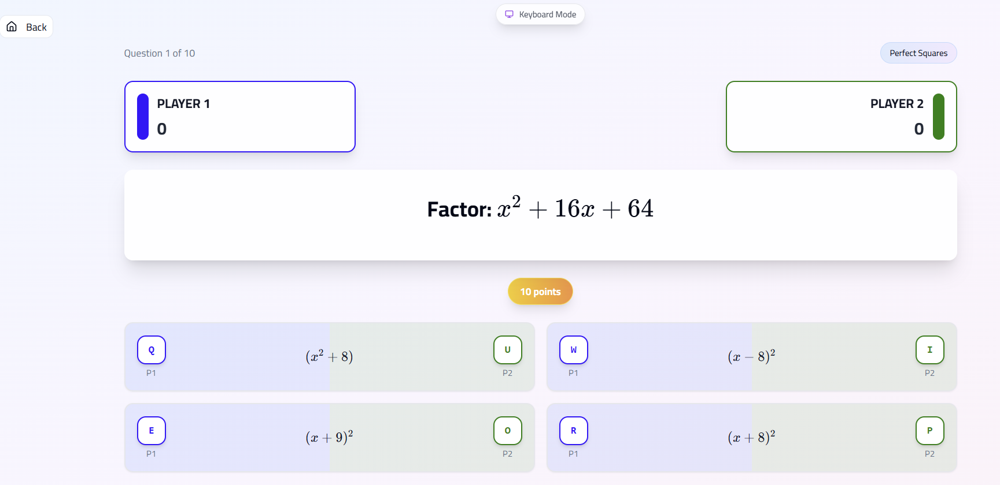
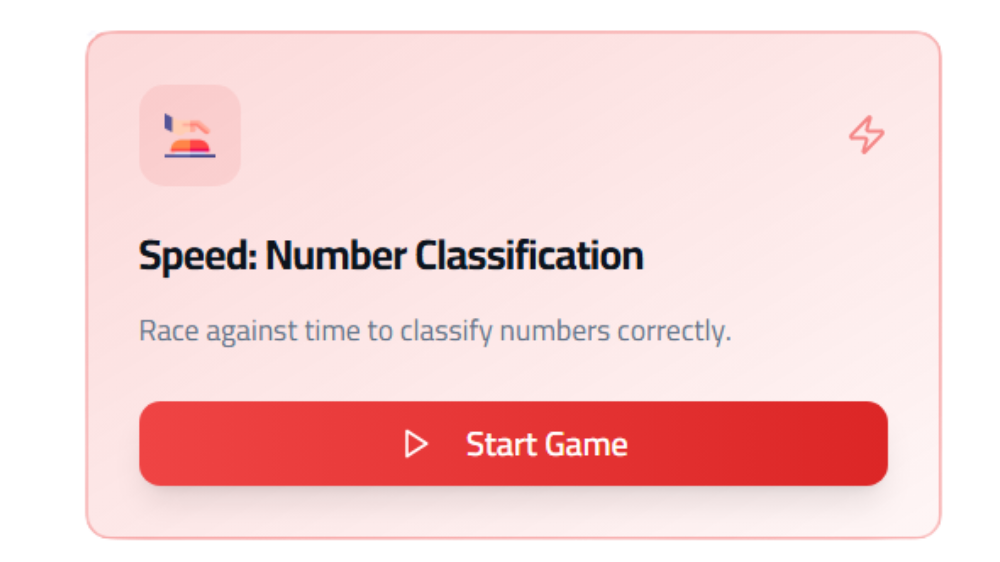
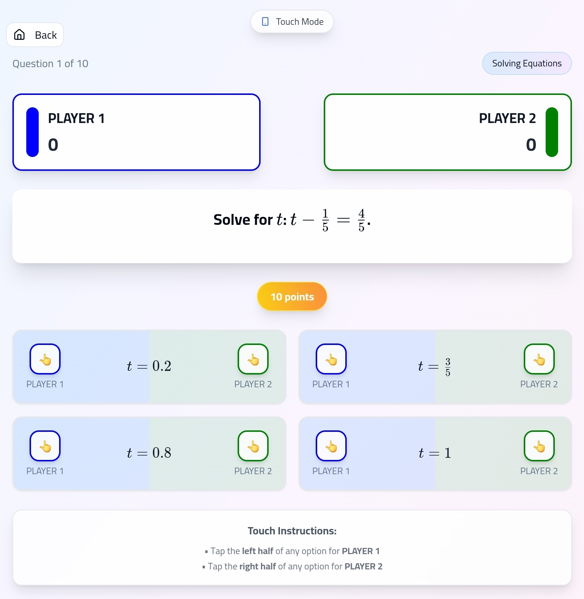

What if math could feel like a game instead of a chore?
That's the idea behind Speed Math Battle—a fast-paced, competitive, and fun math game designed to make kids love learning through play.
Best for: ages 8–14, two players, anywhere from a five-minute warm-up to a full twenty-minute classroom round. No setup, no app store, no login — it just runs in a browser.
🎮 What is Speed Math Battle?
Think of it like a video game—but instead of battling monsters, players race to solve math problems!
Speed Math Battle is a two-player game that transforms math practice into an exciting challenge. With bright animations, real-time interaction, and a competitive edge, it turns learning into an adventure.
🎯 Why We Built It
Speed Math Battle was created with one simple mission:
Make math fun and engaging for all learners.
Our goal is to help kids:
- Build mental math speed
- Improve problem-solving under pressure
- Develop healthy competition
- Gain confidence in their math skills
🎮 How to Play
✅ Getting Started
- Visit the game website – Choose Speed Math Battle from the list.

- Enter player names and pick your favorite colors.
- Choose a difficulty level: Easy, Medium, or Hard.
Let the battle begin! ⚡
🖥 On Large Screens (Keyboards)
- Player 1: Uses Q W E R
- Player 2: Uses U I O P
- Each option lights up in the player's chosen color when selected.
- The first answer is checked; during that time, other options are disabled.
- Correct answer = gain points.
- Wrong answer = lose points (yes, you can go negative!).
- If the first answer is wrong, players can try again (locked out of wrong options).
- If all players guess 3 wrong options in total, the question is skipped.
📱 On Touch Screens

Touch support works with a two-zone system:
- Each answer card is divided in half.
- Player 1 taps the left side.
- Player 2 taps the right side.
⚠️ Note: Small-screen experiences are functional but still being improved. Ideas and suggestions are welcome!
🎓 Educational Benefits
Speed Math Battle is more than a game—it's a powerful learning tool.
What Kids Learn:
- Quick Mental Math: Faster calculations under pressure
- Critical Thinking: Choosing the right answer quickly
- Healthy Competition: A fun way to build resilience
- Progress Awareness: Visual feedback boosts confidence
Features That Keep Kids Engaged:
- Real-time competition (no waiting around)
- Instant feedback on every question
- Score tracking to see improvement
- Multiple difficulty levels to scale up challenges
🧠 Why Mental Math Under Pressure Actually Helps
I want to talk to my fellow teachers (and curious parents) for a second, because "make it a game" sounds like a gimmick — and it isn't.
When a student calculates 7 × 8 with a pencil and unlimited time, they can fall back on counting, on tables, on quietly working it out. That's fine, but it's not fluency. Fluency is when the answer comes back automatically, leaving brain space free for the harder thinking on top of it. Without fluency, every word problem becomes a traffic jam — the student is so busy doing the basic arithmetic that they lose the bigger structure.
The pressure of a timer is what forces fluency. Not stress for its own sake — but a friendly, low-stakes reason to not reach for the pencil. The game replaces "do it perfectly" with "do it quickly," and that small shift is what builds the automatic recall students need before they tackle algebra, percentages, or anything multi-step.
And the competition? Competition is just a reason to care. Most kids will redo the same multiplication ten times to beat their friend, when they wouldn't redo it once for a worksheet. We're not gamifying for fun. We're using the game to buy us repetitions we'd never get otherwise.
🏫 How Teachers Can Use It in Class
- Five-minute warm-up: First five minutes of every lesson, two volunteers play in front of the class on the projector. The room watches and shouts answers. By week two, every kid wants their turn.
- Pair tournament: Whole class plays in pairs. Winners face winners. The "math kid" doesn't always win — speed and nerve matter as much as skill — and that levels the room in a way worksheets never do.
- Reward, not curriculum: The last ten minutes of a hard lesson on fractions, switch to the game. The class learns that finishing the work earns play. That trade is powerful.
- Difficulty as scaffolding: Start the term on Easy. Move to Medium when most pairs are scoring above zero. Hard is where you want them by the end of the unit. Use the level as a quiet diagnostic of where the class actually is.
👨👩👧 A Note for Parents
If your child says "I'm bad at math," don't argue with them — play with them. Five minutes a night, you versus them. Let them beat you sometimes (it's okay, the math is fast and your reflexes aren't what they used to be). Watch what changes in two weeks. They won't tell you they enjoy it. They just won't fight as much when you say "homework time."
💡 Try It Out
Speed Math Battle is part of the MathLogame platform—a collection of interactive math games built for engagement and deep learning.
🧩 Whether you're a teacher, parent, or student, I invite you to give it a try!
Play Speed Math Battle💬 I'd Love Your Feedback!
I'm constantly improving based on real user input. Let me know:
- What did your kids think?
- Which topics were most challenging?
- What features would you love to see next?
- Any ideas for improving the mobile experience?
🎯 The Big Picture
At MathLogame, I believe learning should be joyful, and math is no exception.
With tools like Speed Math Battle, we're showing kids that math can be competitive, rewarding, and—most importantly—fun.
Thanks for reading, and let's make math exciting for the next generation! 🚀✨
~ Salah Alkmali